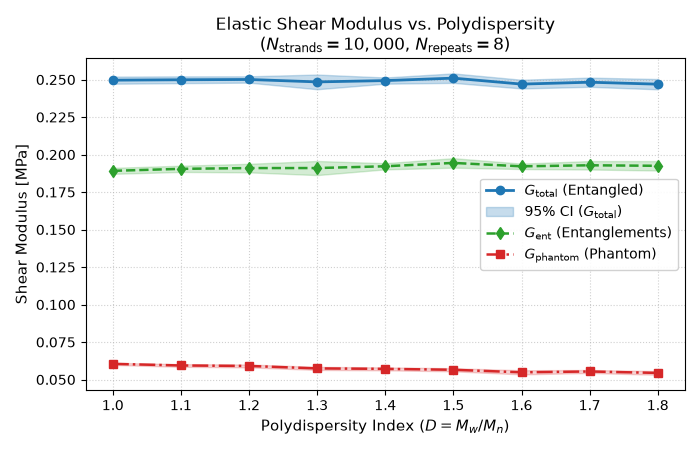
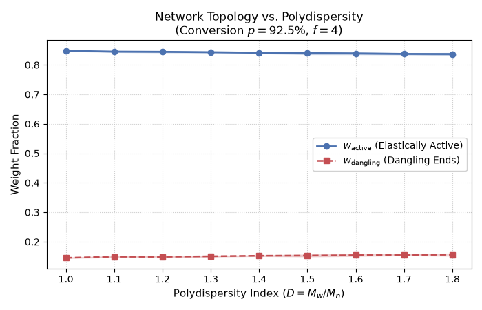

Note
Go to the end to download the full example code.
Polydispersity Study¶
In this example, we study the effect of polymer strand length polydispersity on the equilibrium shear modulus and topological network structure of end-linked polymer networks.
Background & Motivation¶
End-linked polymer networks synthesized experimentally often exhibit polydispersity in precursor chain lengths. According to the phantom network theory and affine network models, chain polydispersity influences both the network connectivity (active strand fraction, loop formation probability) and the distribution of topological constraints (entanglements).
Following Tsimouri et al. [TCG21] and Bernhard and Gusev [BG25], strand lengths are sampled from a continuous log-normal distribution parameterized by the polydispersity index \(D = M_w / M_n\) with a mean strand length \(\langle N \rangle = 50\):
To achieve statistical significance, this study evaluates large systems (\(N_{\text{strands}} = 10\,000\), \(\sim 500\,000\) beads per network) across multiple independent random seeds per polydispersity level. Both the total entangled shear modulus \(G_{\text{total}}\) and the phantom network shear modulus \(G_{\text{phantom}}\) (without entanglements) are evaluated, isolating the entanglement contribution \(G_{\text{ent}} = G_{\text{total}} - G_{\text{phantom}}\).
To ensure fast documentation builds and continuous integration (< 1 s), the multi-seed
ensemble results are cached into a committed .npz archive and loaded transparently.
The full multi-seed simulation can be recomputed at any time by passing --recompute
or setting PYLIMER_RECOMPUTE_CACHE=1.
from concurrent.futures import ProcessPoolExecutor, as_completed
import math
from pathlib import Path
import random
import sys
from typing import Any, Dict, Optional, Sequence, Tuple
import matplotlib.pyplot as plt
import numpy as np
# Ensure examples/ is on sys.path when script is executed directly
if "__file__" in globals():
_examples_dir = str(Path(__file__).resolve().parents[1])
if _examples_dir not in sys.path:
sys.path.insert(0, _examples_dir)
from _example_cache import ( # noqa: E402
compute_ensemble_statistics,
configure_process_threading,
get_example_cache_path,
load_or_compute_cache,
resolve_max_workers,
worker_process_initializer,
)
from pylimer_tools.io.bead_spring_parameter_provider import ( # noqa: E402
ParameterType,
get_parameters_for_polymer,
)
from pylimer_tools_cpp import ( # noqa: E402
EntanglementSamplingMethod,
MCUniverseGenerator,
)
def _simulate_polydispersity_single_repeat(
r: int,
seed: int,
pdi_list: Sequence[float],
n_strands: int,
avg_len: int,
conversion: float,
b: float,
cutoff: float,
ent_density: float,
r02: float,
bead_density: float,
gamma_conv: float,
) -> Tuple[int, np.ndarray, np.ndarray, np.ndarray, np.ndarray]:
"""Execute a single Monte Carlo realization across the specified polydispersity range."""
rng = random.Random(seed)
n_pdi = len(pdi_list)
g_total = np.zeros(n_pdi)
g_phantom = np.zeros(n_pdi)
w_active = np.zeros(n_pdi)
w_dangling = np.zeros(n_pdi)
for i, d in enumerate(pdi_list):
s = math.sqrt(math.log(d)) if d > 1.0 else 0.0
m = math.log(avg_len) - 0.5 * s**2 if d > 1.0 else math.log(avg_len)
# Sample strand lengths from log-normal distribution (or monodisperse
# for d == 1.0)
strand_lengths = [
max(1, int(round(rng.lognormvariate(m, s)))) if d > 1.0 else avg_len
for _ in range(n_strands)
]
n_atoms_total = sum(strand_lengths) + 0.5 * n_strands
vol = n_atoms_total / bead_density
gen = MCUniverseGenerator(
vol ** (1.0 / 3.0),
vol ** (1.0 / 3.0),
vol ** (1.0 / 3.0),
)
gen.set_seed(seed + 31 * i)
gen.config_nr_of_mc_steps(0)
gen.set_bead_distance(b)
gen.add_strands(nr_of_strands=n_strands, strand_lengths=strand_lengths)
gen.add_crosslinkers(int(0.5 * n_strands), 4)
gen.link_strands_to_conversion(crosslinker_conversion=conversion)
# 1. Total Entangled Shear Modulus (with static entanglement links)
fb_ent = gen.get_force_balance2(
nr_of_entanglements_to_sample=int(ent_density * vol),
upper_cutoff=cutoff,
entanglements_as_springs=False,
seed=str(seed + 31 * i),
method=EntanglementSamplingMethod.ON_DEMAND,
)
fb_ent.run_force_relaxation()
g_total[i] = gamma_conv * np.sum(fb_ent.get_gamma_factors(r02)) / vol
w_active[i] = fb_ent.get_active_weight_fraction()
w_dangling[i] = fb_ent.get_dangling_weight_fraction()
# 2. Phantom Shear Modulus (unentangled network baseline)
fb_ph = gen.get_force_balance2()
fb_ph.run_force_relaxation()
g_phantom[i] = gamma_conv * np.sum(fb_ph.get_gamma_factors(r02)) / vol
return r, g_total, g_phantom, w_active, w_dangling
def run_polydispersity_simulation(
pdi_values: Sequence[float] = (
1.0, 1.1, 1.2, 1.3, 1.4, 1.5, 1.6, 1.7, 1.8),
n_strands: int = 10000,
avg_len: int = 50,
conversion: float = 0.925,
n_repeats: int = 8,
base_seed: int = 42,
max_workers: Optional[int] = None,
) -> Dict[str, Any]:
"""Execute multi-seed ensemble simulations of polymer network polydispersity."""
params = get_parameters_for_polymer(
"PDMS", parameter_type=ParameterType.GAUSSIAN)
b = params.get("<b>").to(params.get("distance_units")).magnitude
cutoff = params.get_sampling_cutoff()
ent_density = params.get_entanglement_density()
r02 = params.get("R02").to(params.get("distance_units") ** 2).magnitude
bead_density = params.get_bead_density()
gamma_conv = params.get_gamma_conversion_factor().to("MPa").magnitude
n_pdi = len(pdi_values)
all_g_total = np.zeros((n_pdi, n_repeats))
all_g_phantom = np.zeros((n_pdi, n_repeats))
all_w_active = np.zeros((n_pdi, n_repeats))
all_w_dangling = np.zeros((n_pdi, n_repeats))
tasks = [
(
r,
base_seed + 101 * r,
pdi_values,
n_strands,
avg_len,
conversion,
b,
cutoff,
ent_density,
r02,
bead_density,
gamma_conv,
)
for r in range(n_repeats)
]
workers = min(resolve_max_workers(max_workers), n_repeats)
configure_process_threading(workers)
if workers > 1 and n_repeats > 1:
print(
f"Executing {n_repeats} polydispersity repeats in parallel across {workers} workers..."
)
completed = 0
with ProcessPoolExecutor(
max_workers=workers, initializer=worker_process_initializer
) as executor:
futures = [
executor.submit(_simulate_polydispersity_single_repeat, *task)
for task in tasks
]
for fut in as_completed(futures):
r, g_tot, g_ph, w_act, w_dang = fut.result()
all_g_total[:, r] = g_tot
all_g_phantom[:, r] = g_ph
all_w_active[:, r] = w_act
all_w_dangling[:, r] = w_dang
completed += 1
print(
f" [Polydispersity Study] Completed repeat {completed}/{
n_repeats
} (repeat index {r + 1})..."
)
else:
for task in tasks:
r, g_tot, g_ph, w_act, w_dang = _simulate_polydispersity_single_repeat(
*task
)
all_g_total[:, r] = g_tot
all_g_phantom[:, r] = g_ph
all_w_active[:, r] = w_act
all_w_dangling[:, r] = w_dang
print(
f" [Polydispersity Study] Completed repeat {
r + 1}/{n_repeats}...")
all_g_ent = all_g_total - all_g_phantom
stat_g_total = compute_ensemble_statistics(all_g_total, axis=1)
stat_g_phantom = compute_ensemble_statistics(all_g_phantom, axis=1)
stat_g_ent = compute_ensemble_statistics(all_g_ent, axis=1)
stat_w_active = compute_ensemble_statistics(all_w_active, axis=1)
stat_w_dangling = compute_ensemble_statistics(all_w_dangling, axis=1)
return {
"pdi_values": np.array(pdi_values),
"n_repeats": np.array(n_repeats),
"n_strands": np.array(n_strands),
"avg_len": np.array(avg_len),
"conversion": np.array(conversion),
"g_total_mean": stat_g_total["mean"],
"g_total_std": stat_g_total["std"],
"g_total_sem": stat_g_total["sem"],
"g_total_ci": stat_g_total["ci"],
"g_total_all": all_g_total,
"g_phantom_mean": stat_g_phantom["mean"],
"g_phantom_std": stat_g_phantom["std"],
"g_phantom_sem": stat_g_phantom["sem"],
"g_phantom_ci": stat_g_phantom["ci"],
"g_phantom_all": all_g_phantom,
"g_ent_mean": stat_g_ent["mean"],
"g_ent_std": stat_g_ent["std"],
"g_ent_sem": stat_g_ent["sem"],
"g_ent_ci": stat_g_ent["ci"],
"g_ent_all": all_g_ent,
"w_active_mean": stat_w_active["mean"],
"w_active_std": stat_w_active["std"],
"w_active_sem": stat_w_active["sem"],
"w_active_ci": stat_w_active["ci"],
"w_active_all": all_w_active,
"w_dangling_mean": stat_w_dangling["mean"],
"w_dangling_std": stat_w_dangling["std"],
"w_dangling_sem": stat_w_dangling["sem"],
"w_dangling_ci": stat_w_dangling["ci"],
"w_dangling_all": all_w_dangling,
}
Loading Cached Ensemble Data or Running Live Simulations¶
Loads precomputed dataset from cache or executes live simulation if requested:
if __name__ == "__main__" or "sphinx_gallery" in sys.modules:
cache_path = get_example_cache_path(
"polydispersity_study_cache.npz", "force_balance"
)
data = load_or_compute_cache(cache_path, run_polydispersity_simulation)
pdi_values = data["pdi_values"]
n_repeats = int(data.get("n_repeats", 8))
n_strands = int(data.get("n_strands", 10000))
g_total_mean = data["g_total_mean"]
g_total_ci = data["g_total_ci"]
g_phantom_mean = data["g_phantom_mean"]
g_phantom_ci = data["g_phantom_ci"]
g_ent_mean = data["g_ent_mean"]
g_ent_ci = data["g_ent_ci"]
w_active_mean = data["w_active_mean"]
w_active_ci = data["w_active_ci"]
w_dangling_mean = data["w_dangling_mean"]
w_dangling_ci = data["w_dangling_ci"]
# %%
# Results & Physical Interpretation
# ---------------------------------
# We plot the elastic shear moduli alongside the network topological fractions as a
# function of polydispersity index :math:`D = M_w / M_n`. Error bands represent
# 95% confidence intervals from :math:`N_{\text{repeats}} = 8` independent
# realizations.
# Figure 1: Modulus vs Polydispersity
fig, ax1 = plt.subplots(figsize=(7, 4.5))
ax1.plot(
pdi_values,
g_total_mean,
"o-",
color="#1f77b4",
lw=2,
label=r"$G_{\mathrm{total}}$ (Entangled)",
)
ax1.fill_between(
pdi_values,
g_total_mean - g_total_ci,
g_total_mean + g_total_ci,
color="#1f77b4",
alpha=0.25,
label=r"95% CI ($G_{\mathrm{total}}$)",
)
ax1.plot(
pdi_values,
g_ent_mean,
"d--",
color="#2ca02c",
lw=1.8,
label=r"$G_{\mathrm{ent}}$ (Entanglements)",
)
ax1.fill_between(
pdi_values,
g_ent_mean - g_ent_ci,
g_ent_mean + g_ent_ci,
color="#2ca02c",
alpha=0.2,
)
ax1.plot(
pdi_values,
g_phantom_mean,
"s-.",
color="#d62728",
lw=1.8,
label=r"$G_{\mathrm{phantom}}$ (Phantom)",
)
ax1.fill_between(
pdi_values,
g_phantom_mean - g_phantom_ci,
g_phantom_mean + g_phantom_ci,
color="#d62728",
alpha=0.2,
)
ax1.set_xlabel("Polydispersity Index ($D = M_w / M_n$)", fontsize=11)
ax1.set_ylabel("Shear Modulus [MPa]", fontsize=11)
ax1.set_title(
f"Elastic Shear Modulus vs. Polydispersity\n"
f"($N_{{\\mathrm{{strands}}}} = {n_strands:,}$, $N_{{\\mathrm{{repeats}}}} = {
n_repeats
}$)",
fontsize=12,
)
ax1.grid(True, linestyle=":", alpha=0.6)
ax1.legend(loc="best", framealpha=0.9)
plt.tight_layout()
plt.show()
# Figure 2: Network Topological Fractions vs Polydispersity
fig, ax2 = plt.subplots(figsize=(7, 4.5))
ax2.plot(
pdi_values,
w_active_mean,
"o-",
color="#4c72b0",
lw=2,
label=r"$w_{\mathrm{active}}$ (Elastically Active)",
)
ax2.fill_between(
pdi_values,
w_active_mean - w_active_ci,
w_active_mean + w_active_ci,
color="#4c72b0",
alpha=0.25,
)
ax2.plot(
pdi_values,
w_dangling_mean,
"s--",
color="#c44e52",
lw=1.8,
label=r"$w_{\mathrm{dangling}}$ (Dangling Ends)",
)
ax2.fill_between(
pdi_values,
w_dangling_mean - w_dangling_ci,
w_dangling_mean + w_dangling_ci,
color="#c44e52",
alpha=0.2,
)
ax2.set_xlabel("Polydispersity Index ($D = M_w / M_n$)", fontsize=11)
ax2.set_ylabel("Weight Fraction", fontsize=11)
ax2.set_title(
f"Network Topology vs. Polydispersity\n(Conversion $p = 92.5\\%$, $f = 4$)",
fontsize=12,
)
ax2.grid(True, linestyle=":", alpha=0.6)
ax2.legend(loc="best", framealpha=0.9)
plt.tight_layout()
plt.show()


Loading cached example data from polydispersity_study_cache.npz...
Physical Discussion & Conclusions¶
Robust Elastic Modulus: Across moderate precursor polydispersities (\(1.0 \le D \le 1.8\)), the total shear modulus exhibits remarkable stability because the average strand length \(\langle N \rangle = 50\) remains constant, preserving the total elastically active chain density.
Phantom vs. Entanglement Contributions: Topological entanglements contribute roughly \(\approx 75\%\) of the total shear modulus in dense PDMS networks, substantially exceeding the bare phantom network baseline.
Defect Fractions: While short chains in a polydisperse system have a slightly higher tendency to form primary self-loops, the overall active strand weight fraction \(w_{\mathrm{active}} \approx 84.5\%\) remains robust at high crosslinker conversions (\(p = 92.5\%\)).
Total running time of the script: (0 minutes 0.372 seconds)